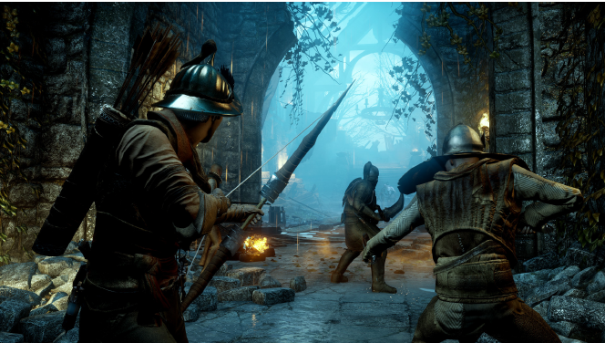
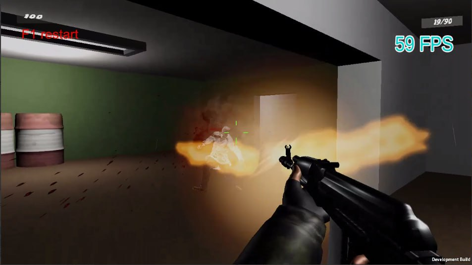

Game development is new to me and I don't know anything about it and that's why I'm going to turn to the information on the internet. First of all, I started by learning what AI is, and during my research I realized that AI is the thing that we need equally in all fields.
The replication of human intellectual processes by machines, particularly computer systems, is referred to as artificial intelligence (AI for short). Expert systems, natural language processing, speech recognition, and machine vision are a few examples of specific uses of artificial intelligence.
I've been busy this week exploring the important role of AI in games. And now I can answer the questions about whether AI can improve your game as follows: AI can help make your multiplayer game more competitive. The game comes to life with AI agents that replace gamers. As players join, they swap them and explore a world full of possibilities. AI can greatly benefit single player games.
In addition, I focus on the brain of the AI - the decision systems.
Finite-state machines are a popular kind of artificial intelligence. Each action has a corresponding state, and the AI can be in any one of those states at any one time. When a certain event occurs in the agent's life, a transition between two states is initiated.
Games: DOOM, QuakeBehavior Trees (BTs) are a major phenomenon of several game engines, including direct support in Unreal Engine. The primary benefit of these tools is that a designer may build an AI system without touching any code. Additionally, their utility is highly adaptable.
Games: HALOPlanning This is quite like State Machines, with the key distinction being that there is no interconnection between the states. In this way, the AI is free to select whatever it likes from the set of possibilities.
Games: FEARThe Utility AI is not structured in any specific way but rather operates according to a predetermined set of rules. In role-playing games, it's typically employed to manage actions with numerous possible outcomes, such as when a player must decide between two or more available talents.
Hope I'll use what I learn in this course to make a small AI game.
Games: Dragon Age: Inquisition All week I've been trying to figure out what type of game I can build, what tool I have available to make it, and what programming language I can use, and I've been seeking for an answer to this issue. And I found answers to all these questions from unity.
Unity is a programmed that facilitates the completion of several distinct game development jobs. Unity is a framework for making video games that allows designers to work in both 2d and 3d. Unity's accessibility means that you won't have to start from scratch, which is a huge selling point for the programmer. Three-dimensional graphics, physics, and collision detection are all handled by Unity. With Unity, creators don't have to worry about the physics because they're already included.
There is a wide variety of programming languages available, each one optimized for a certain set of use cases. To make sense of the code and logic of Unity, users need be familiar with C#. However, if users learn to code, they'll have far more leeway in making the game fit your preferences. Therefore, in order to create games using Unity, you need study C# first. Since I am already familiar with the C# programming language from last year's seminars at the institute and the resulting POS System I developed for the capstone project, I don't believe I had too much trouble with it.
This week started off with a bit of trouble for me because I had a lot of trouble installing unity hub on my computer because it required a powerful operating system.
Unity is not the only game development platform. There are also other popular game production engines. But there are enough reasons why I chose unity.
First, Unity is a good 3D and 2D development tool. Unity also manages visuals efficiently, so you can change the gaming experience on low-end hardware. Unity can also create games for PC, iOS and other game consoles. Like any technology, creating a Unity game has its drawbacks. While pretty, the visuals aren't top notch. I think Unity is more beginner-friendly than other platforms.
This week has been a good one for me because I bought a course from Udemy to learn more about AI gaming and create a quality game. While starting to learn this course, I realized that I still do not have a good understanding of what AI is capable of doing, but this realization has made me more excited about learning about AI gaming and creating a quality game.
But for the time being, I'm going to concentrate on this game, and I'm going into it with a lot of enthusiasm. To this day, I've investigated the process of creating a great many games on YouTube and have even been successful in modifying more than three games before completing them. On the other hand, this time I started working on the actual conclusion of the game. That is to say, I intended to design a zombie game and immediately began developing it.
Now I will try to briefly show the main areas of my code
1. Variable values to be entered
2. Uses the three parameters to pinpoint the player's position and trigger appropriate AI behaviour regardless of the player's current location.
3. These codes correspond to the AI walking in random positions
4. The following is the code that I use to invoke the walking animation.
In summary, the code just shown tells the AI to wander aimlessly until it encounters the player, at which point it turns its attention to the player and starts walking in that direction. Finally, when the player is destroyed, it causes the AI to move to another location. and I did all this in week 5. The rest of the codes are explained in more detail in the block
During week 6, I was puzzled about the manner in which the AI would assault the player. To do this, I started by entering the required data. I programmed the AI to attack just the player and to cease assaulting him as soon as he moved away from the target.
The below-mentioned values are the ones that need to be input.
Giving the command to attack when the AI is close to the player in the form of code
This code sends a command to stop attacking when the player moves away from the AI
I've been working on the sound function for the past seven days. In other words, I've programmed the artificial intelligence to go to the source of the sound when it's within hearing range. If it can't detect the player from that area, it will wander around to another random spot.
The values that have been given above are the ones that need to be entered.
If a sound comes within the AI's hearing radius, it hears the sound and starts moving in that direction. If there is no player, it will continue to move to another random position.
Then I create a game object with the same name in the player
The distance across which the player's footsteps may be heard whenever he is running.
Hearing radius while a gun is being fired. as well as being larger than the radius of the sound that it produces while it runs.
Eighth week and last week, and I have completed all of the tasks required to complete this week It's definitely not simple to combine all the functions in the final process and make a nice overall work, and in addition to that, I had problems with the sound, and I'm having a hard time finding a solution to this problem. I think it's correct to conclude that this week was the most challenging part of the project. I can't be wrong about that. Because of that, I had the opportunity to.
On top of everything else, I've gained a lot of knowledge over the past eight weeks regarding the possibility of having a national AI and even a game.

Created 2022 - Rasulova Vazira